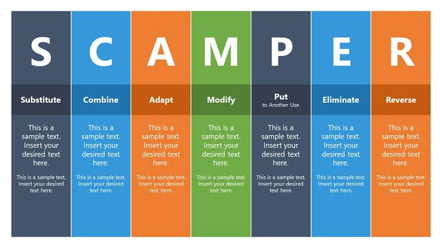
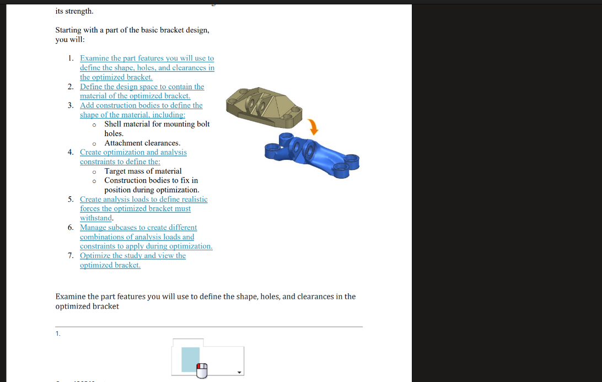
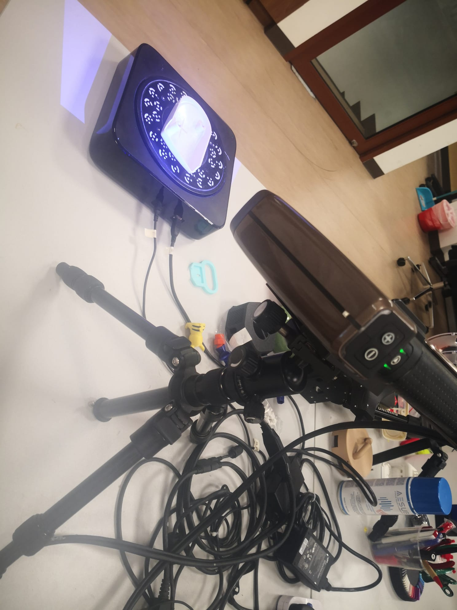
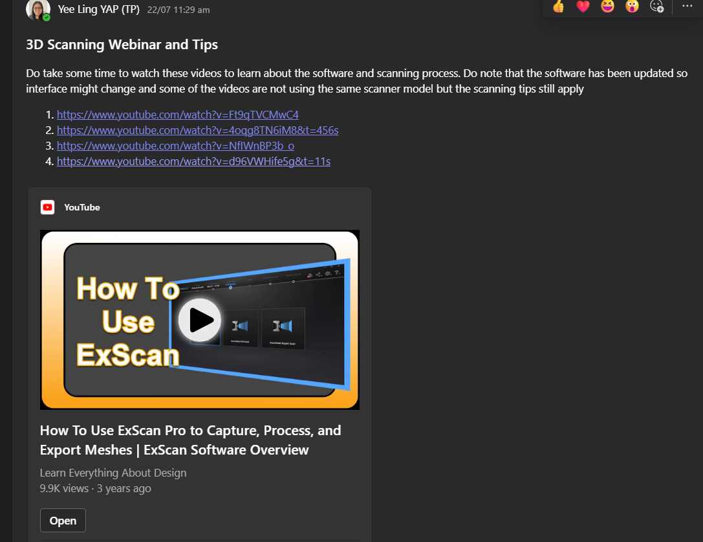

week 1-3 CAD
This model was created using Siemens NX during the CAD practical sessions. It demonstrates the use surface modelling tools.
What I Learnt
I learnt more about surface modelling.
Challenges
At the beginning, I found it difficult to decide which modelling tools were most suitable for creating complex geometry and didnt know whereto start. I often encounterred errors that i didnt know how to fix and caused me to waste alot of time as i didnt know if was bug or not. I practised modelling different parts repeatedly and referred to notes, consult or try a different feature whenever I encountered errors.
Reflection
This module strengthened my CAD modelling skills and taught me the importance of planning a model before creating it.
week 4 Design fundementals & CAD test


Evidence
The images show the SCAMPER design thinking method and one of the CAD exercises completed during the lesson.
What I Learnt
I learnt several design thinking techniques, including the SCAMPER method, which encourages creative thinking when improving existing products. I also learnt how to use the Law Extension feature in Siemens NX to create complex surface shapes with greater control after failing several times trying to use different methods.
Challenges
Applying creative thinking during product redesign was initially difficult because I tended to focus only on the original design instead of exploring alternative ideas. By forcing myself to use surface modelling tools, i was able to comeup with something else while no better then before was at least silighty different.
Reflection
This lesson showed me that engineering design is not only about creating models but also about thinking creatively and selecting the most suitable solution for a given problem.
week 6-7 convergent modeling
This exercise involved editing scanned mesh data directly using convergent modelling tools.
What I Learnt
I learnt how mesh models obtained from 3D scans can be reconstructed and edited.
Challenges
I frequently encountered errors because I missed small but important steps during the exercises because i was not careful in reading the instructions causing alot of time to be wasted. I slowed down, carefully followed the instructions and checked my work afterevery step. This greatly reduced the number of mistakes I made.
Reflection
This experience taught me that attention to detail is extremely important. Taking the time to understand each step before proceeding improved both my confidence and accuracy.
week 11-12 Topology Optimization


These images show the finite element analysis (FEA) setup and the topology optimization result produced during the practical session.
What I Learnt
I learnt how to create free body diagrams, calculate forces and moments, and apply the loads and constraints.
Challenges
I found topology optimization challenging because the setup process was quite long and involved many steps before I could even start the optimization. At first, I did not understand the purpose of each step, so the process felt repetitive and frustrating. I often questioned why so many settings and inputs were required, and it was easy to miss a step when applying the loads, constraints, and other parameters. After the optimization started, generating the solution took several minutes, during which I could not continue working. This made the process feel slow and tested my patience. So I tried working through the process on my own to gain a better understanding of each step. Doing it independently helped me stay focused and made the learning process more interesting.
Reflection
This module was frustrating and satisfying.
week 14-15 3D Scanning & fusion



These images show the handheld scanner, turntable scanning setup.
What I Learnt
I learnt how to use both handheld and turntable scanners to capture physical objects and convert them into digital models. We also learnt that dark colours, symatry and lack of noticable features makes scanning hard. I also started to familiarise myself with Autodesk Fusion as we switched previously using Siemens NX.
Challenges
Scanning objects such as rocks was challenging because the software had difficulty aligning the scans due to lack of notable features. Shadows made scans hard as parts would not be detected because of it, so things that had alot of holes and indents had places that did not pick up. Handheld scanning was very easy to lose track of scan. Learning a completely new CAD interface also required time and practice. I experimented with different scanning angles, increased the overlap between scans and repeated the process until the scans aligned correctly. I also spent extra time exploring the Fusion interface outside of class.
Reflection
This module improved my patience, adaptability and problem-solving skills. Learning a new software package showed me the importance of being flexible.